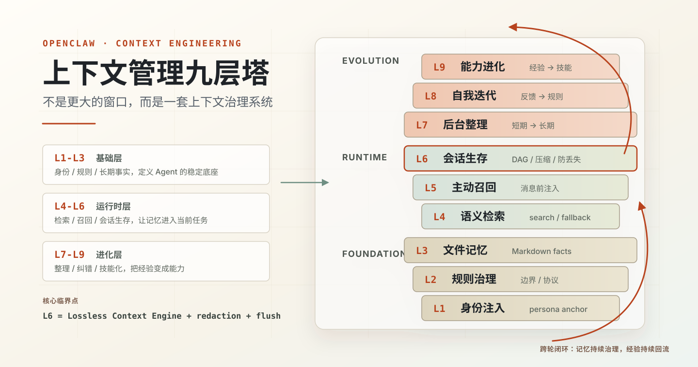
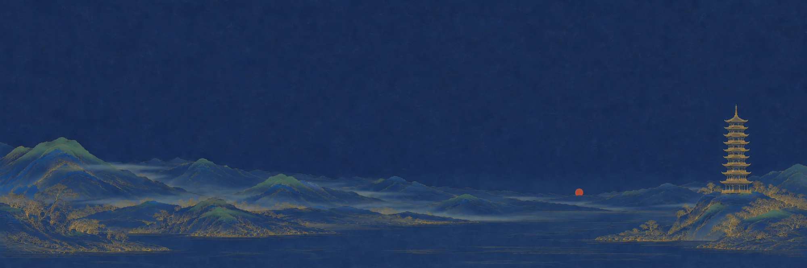

2.0 改了什么
没有加层，补上了层与层之间的契约
第一版解决
怎样让 Agent 记得更久
第二版解决
怎样知道它记对了、用对了，并且能安全恢复、撤销与演进
九层能力 × 四条契约
九层管分工，契约管交接
方块标出每条契约关联的楼层。层号只用来归类职责，不代表调用顺序；契约的作用范围也不限于这些楼层。点一行可以直接读对应章节。
版本档案
第一版仍然可读

第一版来自 OpenClaw 多 Agent 环境的实际运行经验，九层架构就是在解决一个个实际问题的过程中长出来的。它写于 QMD 时期；OpenClaw 2.0 已退役 QMD，QMD 相关做法只作历史参考。
可靠的 Agent Runtime 靠的不是层数，而是每次状态变化都有清楚的责任和可查的证据。
阅读 2.0 报告